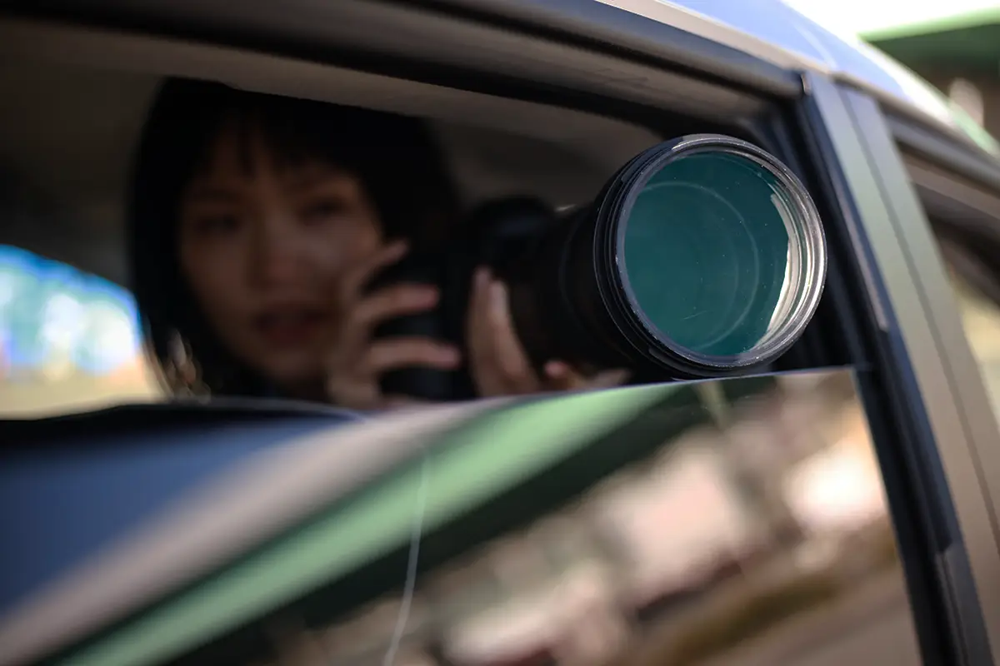
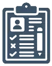
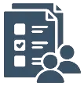

下町探偵団 | 東京23区・24時間365日対応の総合探偵事務所。関東で最も相手を追い詰める事が得意です。


関東で
最も 相手を追い詰める 事が
得意な総合探偵事務所
関東で
最も 相手を追い詰める 事が
得意な総合探偵事務所


下町探偵団とは？
我々の最大の強みは、23区の路地裏から湾岸のタワーマンションまで網羅した、圧倒的な「地回りネットワーク」だ。
決して、大手探偵社のようなスマートな調査ではない。巨大な探偵組織ほど、マニュアル通りの調査でターゲットを見失う。
街に溶け込み、ターゲットが最も油断する瞬間を我々は逃さない。
これは最新のGPSにも、大手探偵事務所のマニュアルにも不可能な「現場の勘」と「地域への精通」が生み出す技術である。
効率やスマートさは二の次。
我々が最優先するのは、
どこよりも早く、確実に、
言い逃れできない証拠をあなたの手元に届けること
ただそれ一点だ。
24時間365日 最短即日対応
まずは話を聞かせてください。
調査メニュー
浮気・不倫調査
「様子がおかしい」という直感は、ほぼ100%正しい。その直感を、裁判でも通用する「言い逃れ不可能な証拠」に変換して、最も有効な形で相手に突きつけます。

身辺調査
履歴、借金、評判。ターゲットの見えない背景をスキャンし、身元が隠し通せなくなるまで突き止めて、あなたのリスクを事前に防ぎます。

素行調査
子供の危うい交友、離れて暮らす親への不審な影、大切な方の不審な行動。周囲に1秒も悟られることなく、ターゲットの「リアル」を克明に記録し報告します。
人探し
音信不通の旧友から、トラブルの相手まで。わずかな手がかりから独自のネットワークを繋ぎ、ターゲットが「逃げられなくなる」まで、最短距離で貼り付きます。
企業信用調査
実体のないペーパーカンパニーや、不透明な資金繰り。契約後に後悔しないよう、その会社の「不都合な真実」を報告書にまとめます。
ストーカー調査
被害の証拠化から正体の特定まで。警察が動かざるを得ない「完璧な材料」を揃え、あなたの安全を確保します。
下町探偵団が選ばれる
5つの理由
なぜ、本気で戦う者は「下町探偵団」を指名するのか。
後出しジャンケンは一切なしの
明朗会計
調査後に「経費がかさんだ」と依頼者に泣きつくのはプロ失格だ。事前に合意したプラン以外の追加請求は、1円たりとも発生しないと約束する。
東京を支配する、
独自の地回りネットワーク
港区のタワマンから足立の路地裏まで、俺たちの目が届かない場所はない。東京の土地勘と人脈を駆使し、ターゲットの死角から接近する。他社が諦める場面こそ、我々は真価を発揮する。
勝てる証拠への
徹底したこだわり
ただ写真を撮って終わりじゃない。それが法廷で、あるいは交渉でどう武器になるか。依頼者が望む「解決」まで、プロの戦術を共有する。
24時間・最短即日対応の
機動力
「今夜、怪しい」その直感に応える機動力。東京全域に配置された調査員が、最短スピードで現場を制圧する。
他言無用を約束する
徹底した守秘義務
調査に関わるすべての情報は、墓場まで持っていく覚悟である。物理的・デジタル的な徹底消去により、依頼主のプライバシーを完遂守護する。
24時間365日 最短即日対応
まずは話を聞かせてください。
調査の流れ
無料相談
まずは現状をぶちまけてください。電話、フォーム、LINE。誰にも聞かれない場所からでも大丈夫。
戦術立案
無駄な調査は一切なし。ターゲットを仕留めるために、最も合理的で、最も殺傷能力の高いプランを提示します。
ここまでは無料です
執行（調査開始）
契約を交わした瞬間から、我々はあなたの「影」となり、ターゲットの日常を徹底的に追跡します。進捗はリアルタイムで共有可能。
報告書提出
相手が二度と立ち上がれなくなるような、圧倒的な「証拠」と共に、法的効力を持つ報告書を提出。その後の腕利きの弁護士紹介など、次の戦いに向けたフォローも万全です。
よくある質問
相談や見積もりに費用は掛かりますか？
かかりません。我々はあなたの「真実を知りたい」という覚悟に値段をつけるつもりはありません。
相談を誰かに見られないか心配です。
探偵がターゲットに気づかれるのは三流です。それは依頼主に対しても同じこと。電話一本、メール一通で大丈夫。会う必要があるなら、あなたが指定した「絶対に安全な場所」へ我々が潜り込みます。
遠方に住んでいますが、依頼できますか？
あなたが地球の裏側にいても、ターゲットが東京という庭の中にいるなら我々の出番です。
地の利を活かして、逃げ隠れする隙を与えません。
情報が漏洩することはありませんか？
秘密を守れない探偵に、存在価値はありません。
情報は墓場まで持っていくのがこの世界のルールです。仕事が終われば、関連する書類はすべて裁断・焼却し、この世から消し去ります。
予算が少なく、依頼を迷っている。
限られた予算で、いかに致命傷（証拠）を与えるか。それがプロの腕の見せ所です。無駄な調査は一切省き、予算内で「最高の結果」を出すためのプランを提示します。
決別か、隷属か。
このままひとりで悩んでいても、状況は変わらない。
あなたが求めているのは、同情でもなく、励ましでもなく、「解決のためのカード」のはず。
夜明けは、証拠を手にした者にしか訪れない。
お問い合わせ
お急ぎの方はこちらから： 03-6823-3997